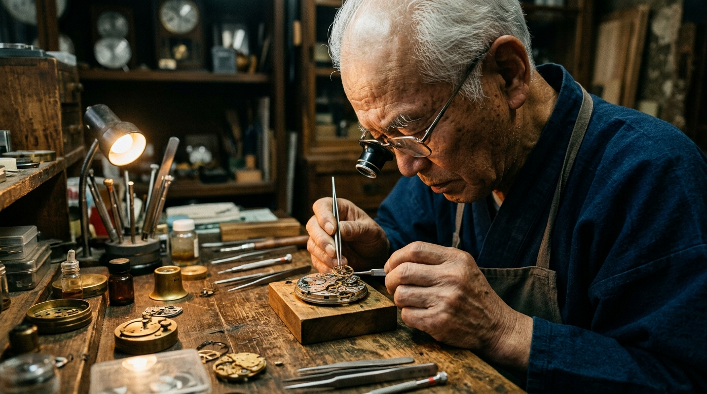

THE CRAFTSMAN'S SILENCE
An 18-minute contemplation on mastery, dedication, and aging in Kyoto. Pacing dictated by breath, tweezers placing balance springs, and wood creaks in a 90-year-old workshop.
THE APPROACH
Editing by the rhythm of breath. While commercial editing thrives on rapid information delivery, long-form documentary requires bravery in stillness. I timed cuts precisely to Mori-san's exhalations: he would hold his breath for twelve seconds before seating an escapement jewel. The cut never interrupted that tension; the camera stayed locked until the release of breath.
Every audio track was rebuilt from the ground up: the tiny ping of steel tweezers against brass plates, the whisper of diamond paste on boxwood laps, and the acoustic resonance of tatami mats under morning rain.
The film received official selection at Tokyo Documentary Film Festival 2024 and achieved a 72% full completion rate on YouTube's long-form creator showcase.
KODAK 500T TUNGSTEN & WOOD GRAIN
Warm, tactile film emulation honoring the warm patina of cedar workbenches.
Preserving the intimate warmth of the single desk lamp while maintaining soft neutral daylight from the shoji window.
Leaving eighty years of weathered facial detail untouched without harsh digital artificial sharpness.
Subtitles appear 6 frames after dialogue begins, preventing visual competition with micro-movements on screen.
NATURAL DOCUMENTARY GRADE

FINAL GRADE // KODAK 500T 2700K RAW CAMERA LOG // NEUTRAL
RAW CAMERA LOG // NEUTRAL
WORKSHOP FOLEY STEM BREAKDOWN
Sound recorded with binaural shotgun microphones to preserve intimate tactile presence.